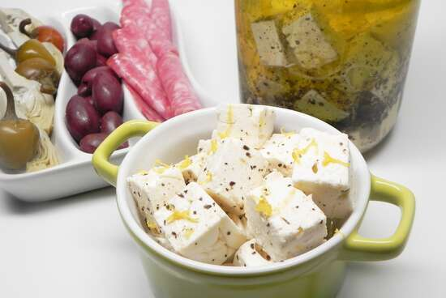

Easy Marinated Feta

Description
A simple and easy marinated feta cube recipe. You may spice things up and add garlic if you choose to do so,
or you could stick to this simple variation.
Ingredients
- 1 pound feta cheese, cubed
- 1 chile pepper
- 1 tablespoon herbes de Provence
- 1 pinch lemon zest
- 1 cup olive oil, or as needed
Directions
- Place feta cheese in a glass jar. Add chile pepper, herbes de Provence, and lemon zest.
Fill jar with olive oil so feta is completely covered and seal.
- Marinate in a cool place, but not in the refrigerator, for 3 to 4 days.
Remove chile pepper before serving.
Nutrition Facts
Per Serving: 519 calories; protein 10.8g; carbohydrates 3.8g; fat 52g;
cholesterol 66.8mg; sodium 838.2mg.